GitBook 搭建
Create by jsliang on 2019-05-20 14:43:41
Recently revised in 2019-5-29 08:47:31
本文将介绍如何安装 GitBook、如何起 GitBook 服务、如何配置 GitBook，以及到最后的部署到 GitHub Pages 或者部署到个人云服务器。
小伙伴们如果觉得不错可以到 jsliang 的文档库 为 jsliang 点个 star，谢谢~
下面是最终效果，欢迎评论留言~
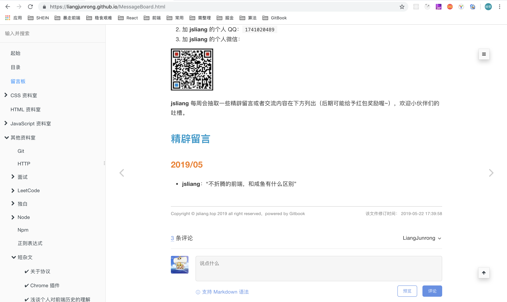
一 目录
不折腾的前端，和咸鱼有什么区别
| 目录 |
|---|
| 一 目录 |
| 二 前言 |
| 三 GitBook 常用指令 |
| 四 GitBook 插件配置 |
| 五 GitBook 打包部署 |
| 六 总结 |
二 前言
由于平时喜欢使用 MarkDown 编写文档，无意中在工作上暴露了自己会使用 MarkDown 的 “优点”，所以上周日（2019-05-19）被抓苦力，叫去将公司 WIKI 转成 GitBook。
后面回到租房自己又玩了下，表示深深被吸引了，这也太好用了吧！
所以在这里安利给小伙伴们，大家一起 happy 下。
三 GitBook 常用指令
- 安装 GitBook：
npm i gitbook-cli -g - 初始化 GitBook 项目：
gitbook init - 安装 GitBook 依赖：
gitbook install - 开启 GitBook 服务：
gitbook serve - 打包 GitBook 项目：
gitbook build - GitBook 命令行查看：
gitbook -help - GitBook 版本查看：
gitbook -V
首先，我们为电脑配置 GitBook，在 终端 中直接敲：npm i gitbook-cli -g，电脑会配置好 GitBook。
由于 Mac 可能会有权限限制，所以需要执行
sudo npm i gitbook-cli -g
然后，我们找个空文件夹，初始化一个 GitBook 项目：gitbook init，目录会生成一个 README.md 内容文件和一个 SUMMARY.md 目录文件。
- GitBook
- README.md
- SUMMARY.md
README.md
# 号表示一级标题，详情可自行查看 MarkDown 语法
# Introduction
SUMMARY.md
[链接](链接地址) 表示跳转链接，即 GitBook 会根据你的 SUMMARY 自动帮你生成左侧菜单栏的目录
# Summary
* [Introduction](README.md)
最后，我们在 终端 输入 gitbook serve 即可开启一个 localhost:4000 的服务，请在浏览器中输入 http://localhost:4000 即可访问服务。

四 GitBook 插件配置
仅仅只有个搜索功能的 GitBook 怎么可能吸引 jsliang！，插件的配置才是 GitBook 的核心！！！
下面我们开始配置 GitBook 插件。
首先，给目录中添加一个 book.json 文件：
- GitBook
- README.md
- SUMMARY.md
- book.json
然后，我们配置下 book.json：
book.json
{
"title": "jsliang 的文档库",
"author": "梁峻荣 - jsliang",
"description": "jsliang 的文档库. 里面包含了个人撰写的所有前端文章，例如 Vue、React,、ECharts、微信小程序等……",
"language": "zh-hans",
"styles": {
"website": "./public-repertory/css/gitbook-configure.css"
},
"plugins": [
"theme-comscore",
"prism",
"-highlight",
"copy-code-button",
"search-pro",
"-search",
"-lunr",
"expandable-chapters",
"splitter",
"-sharing",
"github-buttons",
"donate",
"tbfed-pagefooter",
"baidu-tongji",
"anchor-navigation-ex"
],
"pluginsConfig": {
"github-buttons": {
"buttons": [
{
"user": "LiangJunrong",
"repo": "document-library",
"type": "star",
"count": true,
"size": "small"
},
{
"user": "LiangJunrong",
"width": "160",
"type": "follow",
"count": true,
"size": "small"
}
]
},
"donate": {
"button": "打赏",
"alipayText": "支付宝打赏",
"wechatText": "微信打赏",
"alipay": "https://github.com/LiangJunrong/document-library/blob/master/public-repertory/img/seek-reward.jpg?raw=true",
"wechat": "https://github.com/LiangJunrong/document-library/blob/master/public-repertory/img/seek-reward.png?raw=true"
},
"prism": {
"css": [
"prismjs/themes/prism-solarizedlight.css"
],
"lang": {
"shell": "bash"
}
},
"tbfed-pagefooter": {
"copyright":"Copyright © jsliang.top 2019",
"modify_label": "该文件修订时间：",
"modify_format": "YYYY-MM-DD HH:mm:ss"
},
"baidu-tongji": {
"token": "55e7dfe47f4dc1c018d4042fdfa62565"
},
"anchor-navigation-ex": {
"showLevel": false
}
}
}
最后，我们安装下 book.json 中配置的插件：gitbook install，并把 jsliang 的文档库 的内容复制过来，修改下 SUMMARY.md，重新启动项目：gitbook serve。
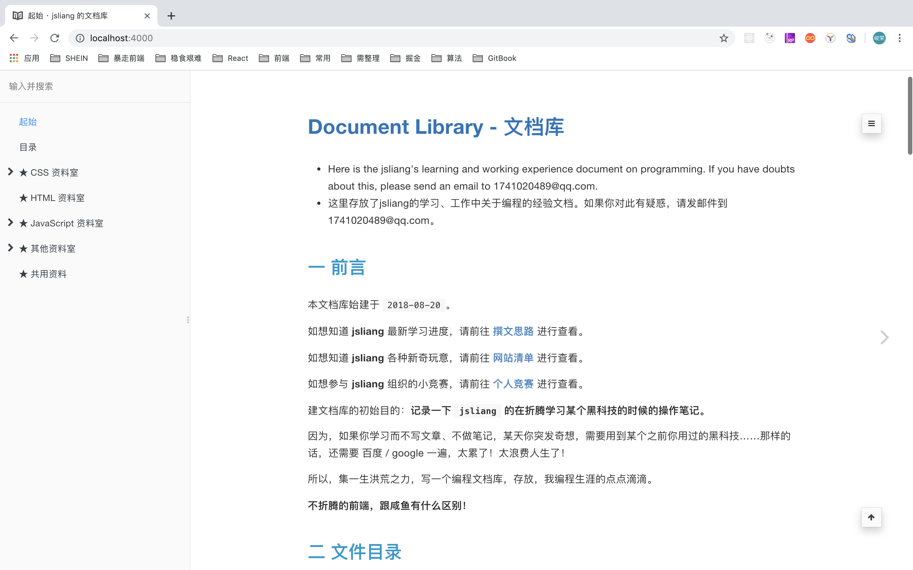
当然，这需要你配置下 SUMMARY.md 文件，不过这应该对你来说不成问题。
4.1 book.json
现在，我们讲解下 book.json 的意思：
title：网站标题author：网站作者description：网站功能描述language：网站使用语言styles：网站额外配置的样式表plugins：网站使用的插件pluginsConfig：网站使用的插件的额外配置
下面主要讲解下 styles 和 plugins。
4.2 gitbook - styles
有的时候，GitBook 会自带一些你不需要的样式，例如侧边栏的 由 GitBook 提供支持 等，我们可以通过设置 CSS 来让它隐藏掉：
.gitbook-link {
display: none !important;
}
.summary .divider {
display: none !important;
}
4.3 gitbook - plugins
plugins 即插件的意思，有的 plugins 的配置，因为需要用户自行决定需要使用哪些功能，所以需要再额外配置下 pluginsConfig。
下面我们先列 plugins 清单，再逐个讲解功能实现：
插件 1 - theme-comscore
theme-comscore：为 GitBook 添加好看的样式，它会使 Table 表单等变得更加好看。
配置方法
"plugins": [
"theme-comscore"
]
参考效果：
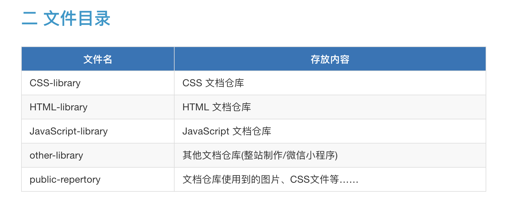
插件 2 - prism
prism：为 GitBook 的 Code 添加更好看的样式，使用它的时候记得屏蔽 GitBook 默认的 highlight 插件，即通过 （-highlight 表示，下面出现 - 的插件也一样）
配置方法
"plugins": [
"prism",
"-highlight"
],
"pluginsConfig": {
"prism": {
"css": [
"prismjs/themes/prism-solarizedlight.css"
],
"lang": {
"shell": "bash"
}
}
}
参考效果：
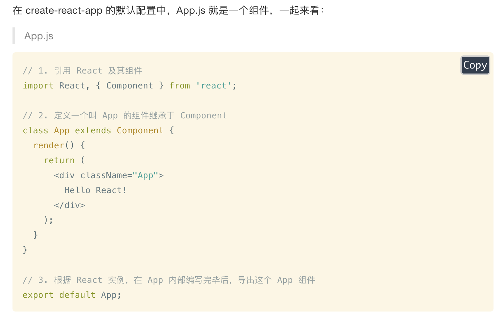
插件 3 - copy-code-button
copy-code-button：给 GitBook 的 Code 添加复制功能，可以一键复制代码块的所有代码。
配置方法
"plugins": [
"copy-code-button"
]
参考效果：
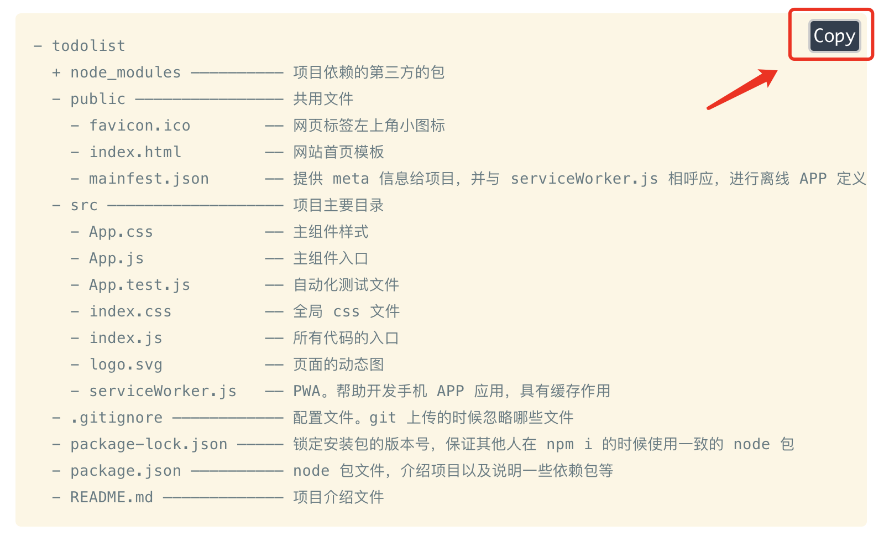
插件 4 - search-pro
search-pro：由于 GitBook 支持的搜索，对于中文不太好。添加该插件后，对搜索结果能用高亮来显示，非常强大。当然，由于取缔了默认的搜索功能，所以需要屏蔽 search 和 lunr
配置方法
"plugins": [
"search-pro",
"-search",
"-lunr"
]
参考效果：
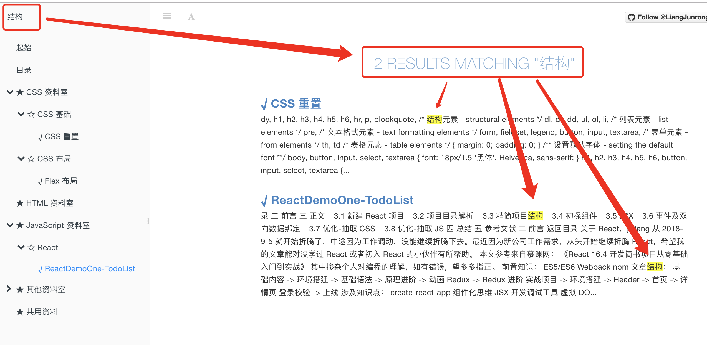
插件 5 - expandable-chapters
expandable-chapters：由于侧边栏标题是默认全部展开的，所以这个插件会让它具有展开收缩功能。
配置方法
"plugins": [
"expandable-chapters"
]
参考效果：
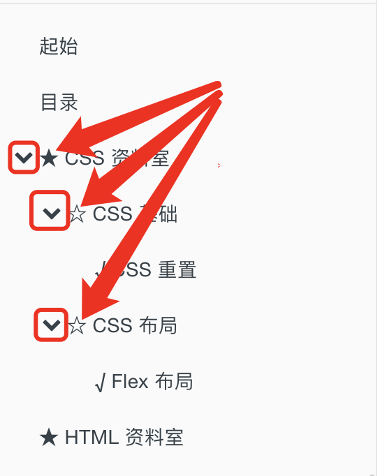
插件 6 - splitter
splitter：让侧边栏的宽度可以自行拖动。
配置方法
"plugins": [
"splitter"
]
参考效果：
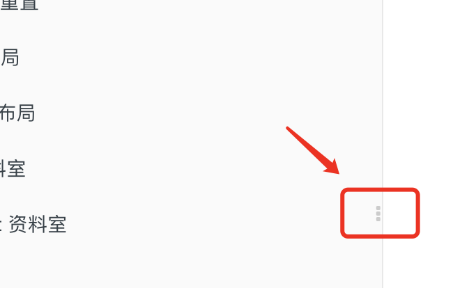
插件 7 - -sharing
-sharing：去掉 GitBook 默认的分享功能。由于它默认的一些推特，脸书都需要翻墙，而我们做的是中文站点，所以将分享功能全部关闭掉。
配置方法
"plugins": [
"-sharing"
]
参考效果：
插件 8 - github-buttons
github-buttons：给 GitBook 添加 GitHub 的图标，来显示 follow 和 stars。
配置方法
"plugins": [
"github-buttons"
],
"pluginsConfig": {
"github-buttons": {
"buttons": [
{
"user": "LiangJunrong",
"repo": "document-library",
"type": "star",
"count": true,
"size": "small"
},
{
"user": "LiangJunrong",
"width": "160",
"type": "follow",
"count": true,
"size": "small"
}
]
}
}
参考效果：
插件 9 - donate
donate：给底部配置一个打赏模块，用户可以点击进行支付宝、微信打赏等。
配置方法
"plugins": [
"donate"
],
"pluginsConfig": {
"donate": {
"button": "打赏",
"alipayText": "支付宝打赏",
"wechatText": "微信打赏",
"alipay": "https://github.com/LiangJunrong/document-library/blob/master/public-repertory/img/seek-reward.jpg?raw=true",
"wechat": "https://github.com/LiangJunrong/document-library/blob/master/public-repertory/img/seek-reward.png?raw=true"
}
}
参考效果：
插件 10 - tbfed-pagefooter
tbfed-pagefooter：给 GitBook 每个页面添加页脚，这样就可以知道这些文件的 copyright 以及修改时间等。
配置方法
"plugins": [
"tbfed-pagefooter"
],
"pluginsConfig": {
"tbfed-pagefooter": {
"copyright":"Copyright © jsliang.top 2019",
"modify_label": "该文件修订时间：",
"modify_format": "YYYY-MM-DD HH:mm:ss"
}
}
参考效果：
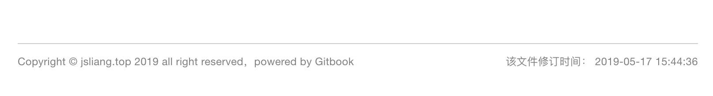
插件 11 - baidu-tongji
baidu-tongji：给 GitBook 的站点添加百度统计，这样用户的访问数量可以通过百度统计查看到。
配置方法
"plugins": [
"baidu-tongji"
],
"pluginsConfig": {
"baidu-tongji": {
"token": "55e7dfe47f4dc1c12345678fdfa62565"
}
}
插件 12 - anchor-navigation-ex
anchor-navigation-ex：根据 # ## ### 自动生成菜单，并添加跳转到顶部效果。
配置方法
"plugins": [
"anchor-navigation-ex"
],
"pluginsConfig": {
"anchor-navigation-ex": {
"showLevel": false
}
}
参考效果：

插件 13 - gitalk
gitalk：给页面添加评论功能，这些评论内容会添加到 GitHub 仓库的 Issue 上。
首先，这不是一个插件，Gitalk 是一个基于 GitHub Issue 和 Preact 开发的评论插件。
然后，我们在 MessageBoard.md（即我们需要添加评论区的页面）中添加对应的代码：
<link rel="stylesheet" href="https://cdn.jsdelivr.net/npm/gitalk@1/dist/gitalk.css">
<script src="https://cdn.jsdelivr.net/npm/gitalk@1/dist/gitalk.min.js"></script>
<div id="gitalk-container"></div>
<script>
var gitalk = new Gitalk({
"clientID": "需要补充的 clientID",
"clientSecret": "需要补充的 clientSecret",
"repo": "document-library",
"owner": "LiangJunrong",
"admin": ["LiangJunrong"],
"id": location.pathname,
"distractionFreeMode": false
});
gitalk.render("gitalk-container");
</script>
接着，我们大致讲讲上面那些字段：
clientID：GitHub 开发者设置，客户端连接标识。下面有详细讲解。clientSecret：GitHub 开发者设置，客户端秘钥。下面有详细讲解。repo：GitHub 仓库名，我们的就是document-library啦。owner：GitHub 仓库所有者，就是我 GitHub 账户：LiangJunrong。admin：GitHub 仓库管理者，还是我的 GitHub 账户：LiangJunrong。（支持数组，多个管理者）id：页面的唯一标识，默认值:location.hrefdistractionFreeMode：类似 Facebook 评论框的全屏遮罩效果,默认值:false
更多配置请看：Gitalk
再来，我们打开页面：GitHub 开放授权应用
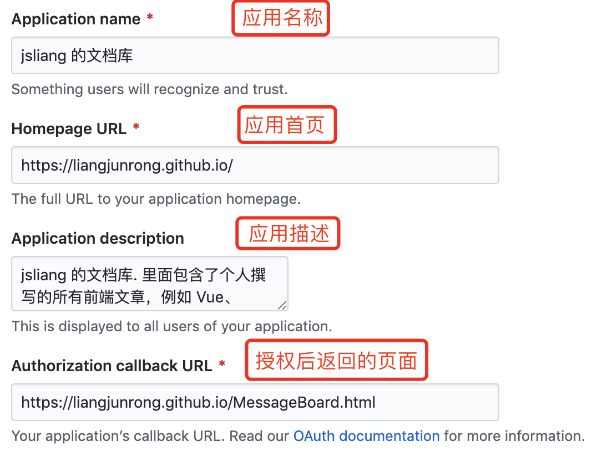
创建后页面会显示：
最后，我们可以在 http://localhost:4000/MessageBoard.html 中查看到结果显示（最终需要放到 LiangJunrong.github.io 中）：
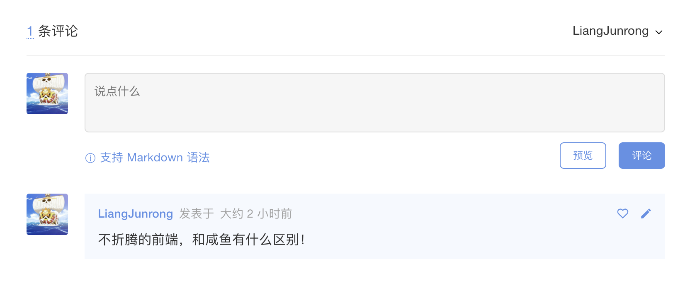
这样，我们就完成了单个页面添加 Gitalk，如果需要添加多个页面，那么可以参考下 雪之梦技术驿站 的攻略（这里就不哆嗦了，jsliang 亲测有效）：
插件 14 - 参考文献
- GitBook 插件 - GitHub - zhangjikai
- 插件功能定制，参数详解 - GitHub - zq99299
- Gitbook 的使用和常用插件 - 赵达
- 【Gitbook】实用配置及插件介绍 - zhangjk
- 如何优雅地使用 Gitbook - 泫
- gitbook 入门教程之实用插件(新增3个插件) - segmentfault - 雪之梦技术驿站
- Gitbook模板 - GitHub - crifan
五 GitBook 打包部署
现在，是时候打包并且发布项目，让其他小伙伴看到你的成果了。
首先，打包项目：gitbook build。
然后，部署到 GitHub Pages 或者个人云服务器。
最后，我们查看下我们的部署页面：
部署在 GitHub Pages 中的页面：https://liangjunrong.github.io/
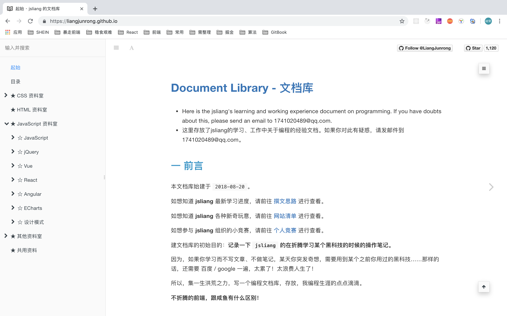
六 总结
OK，我们的 GitBook 教学到此结束啦。
如果小伙伴们在使用 GitBook 开发的时候碰到问题，可以联系我：
- 加 jsliang 的 QQ 资料群：
798961601。 - 加 jsliang 的个人 QQ：
1741020489 - 加 jsliang 的个人微信：

最后的最后，小伙伴们觉得不错的话，记得给 jsliang 点个 赞 或者 star 哦~
PS：如果需要购买云服务器来存放自己通过 GitBook 打包的页面，可以点击下面链接或者咨询 jsliang 噢~
jsliang 广告推送：
也许小伙伴想了解下云服务器
或者小伙伴想买一台云服务器
或者小伙伴需要续费云服务器
欢迎点击 云服务器推广 查看！


jsliang 的文档库 由 梁峻荣 采用 知识共享 署名-非商业性使用-相同方式共享 4.0 国际 许可协议进行许可。
基于https://github.com/LiangJunrong/document-library上的作品创作。
本许可协议授权之外的使用权限可以从 https://creativecommons.org/licenses/by-nc-sa/2.5/cn/ 处获得。